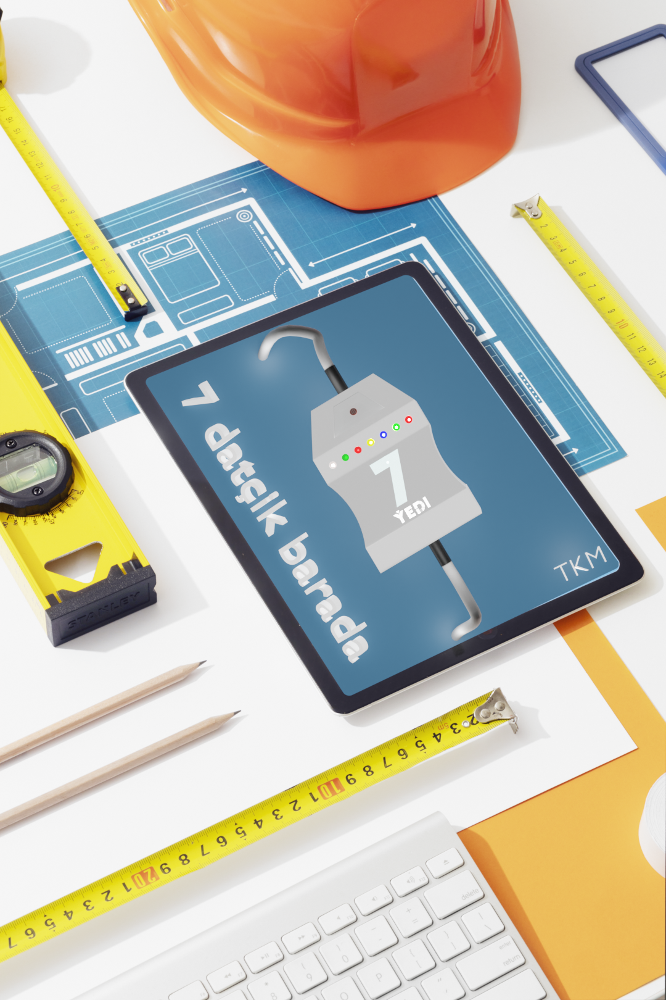
Ulanylyş düzgünleri. Tok çeşmesine aşakda suratdaky görkezilişi ýaly birikdirmeli. Elektrik çeşmesi birikdirilenden soň ýokarky bölegine niýetlenen elektrik togy bilen işleýän enjamy goşmaly. Meselem: lampa, nasos, tok peçler we ş.m.
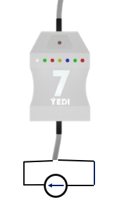
Birikdirilen enjamy 7 datçigiň kömegi bilen aşakda görkezilen 11 görnüşde işleýşini sazlap bolýar. Bir funksiýadan başga bir funksiýa geçmek üçin 7 datçigiň suratdaky görkezilen ýerine eliň aýasyny bellenilen tertipde goýup aýyrmaly. Eliň aýasyny degirip aýyranyňda interwal 1 sekuntdan kän bolmaly däl.
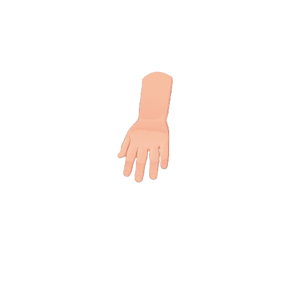
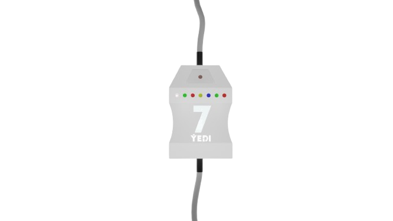
2 gezek eliň aýasyny degirip aýyrmaly. 7 datçigiň çepden saga 2-nji ýaşyl çyrasy ýanýar. Ýaşyl çyra ýananda elektrik togy hemişe geçip durýar (açar hökmünde ulanyp bolýar). Öçürmek üçin ýene-de 2 gezek eliň aýasyny degirip aýyrmaly.
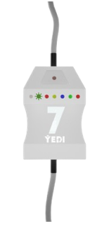
3 gezek eliň aýasyny degirip aýyrmaly. 7 datçigiň çepden saga 3-nji gyzyl çyrasy ýanýar. Gyzyl çyra ýananda elektrik togy agşam ýanýar, gündiz öçýär. Öçürmek üçin ýene-de 3 gezek eliň aýasyny degirip aýyrmaly.
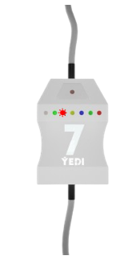
4 gezek eliň aýasyny degirip aýyrmaly. 7 datçigiň çepden saga 4-nji sary çyrasy ýanýar. Sary çyra ýananda elektrik togy agşam öçýär, gündiz ýanýar. Öçürmek üçin ýene-de 4 gezek eliň aýasyny degirip aýyrmaly.
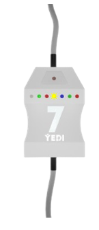
5 gezek eliň aýasyny degirip aýyrmaly. 7 datçigiň çepden saga 5-nji gök çyrasy ýanýar. Gök çyra ýananda elektrik togyny 1 sagat geçirýär. 1 sagatdan soň datçik elektrik toguny geçirmesini goýýar. Öçürmek üçin ýene-de 5 gezek eliň aýasyny degirip aýyrmaly.
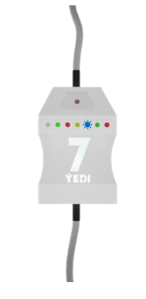
6 gezek eliň aýasyny degirip aýyrmaly. 7 datçigiň çepden saga 6-nji ýaşyl çyrasy ýanýar. Ýaşyl çyra ýananda elektrik togyny 2 sagat geçirýär. 2 sagatdan soň datçik elektrik toguny geçirmesini goýýar. Öçürmek üçin ýene-de 6 gezek eliň aýasyny degirip aýyrmaly.
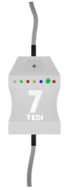
7 gezek eliň aýasyny degirip aýyrmaly. 7 datçigiň çepden saga 7-nji gyzyl çyrasy ýanýar. Gyzyl çyra ýananda elektrik togyny 3 sagat geçirýär. 3 sagatdan soň datçik elektrik toguny geçirmesini goýýar. Öçürmek üçin ýene-de 7 gezek eliň aýasyny degirip aýyrmaly.
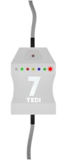
8 gezek eliň aýasyny degirip aýyrmaly. 7 datçigiň çepden saga 5-nji gök we 7-nji gyzyl çyrasy ýanýar. Gök we gyzyl çyra ýananda elektrik togyny 4 sagat geçirýär. 4 sagatdan soň datçik elektrik toguny geçirmesini goýýar. Öçürmek üçin ýene-de 8 gezek eliň aýasyny degirip aýyrmaly.
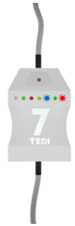
9 gezek eliň aýasyny degirip aýyrmaly. 7 datçigiň çepden saga 6-nji ýaşyl we 7-nji gyzyl çyrasy ýanýar. Ýaşyl we gyzyl çyra ýananda elektrik togyny 5 sagat geçirýär. 5 sagatdan soň datçik elektrik toguny geçirmesini goýýar. Öçürmek üçin ýene-de 9 gezek eliň aýasyny degirip aýyrmaly.
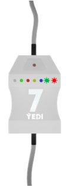
10 gezek eliň aýasyny degirip aýyrmaly. 7 datçigiň çepden saga 5-nji gök, 6-nji ýaşyl we 7-nji gyzyl çyrasy ýanýar. Gök, ýaşyl, gyzyl çyra ýananda elektrik togyny 6 sagat geçirýär. 6 sagatdan soň datçik elektrik toguny geçirmesini goýýar. Öçürmek üçin ýene-de 10 gezek eliň aýasyny degirip aýyrmaly.
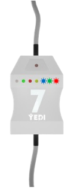
11 gezek eliň aýasyny degirip aýyrmaly. 7 datçigiň çepden saga 3-nji gyzyl we 5-nji gök çyrasy ýanýar. Gyzyl we gök çyra ýananda elektrik togyny günde agşam bolanda 1 sagat geçirýär. 1 sagatdan soň datçik elektrik toguny geçirmesini goýýar. Öçürmek üçin ýene-de 11 gezek eliň aýasyny degirip aýyrmaly
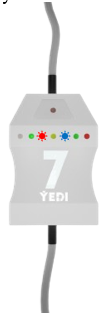
12 gezek eliň aýasyny degirip aýyrmaly. 7 datçigiň çepden saga 4-nji sary we 5-nji gök çyrasy ýanýar. Sary we gök çyra ýananda elektrik togyny günde irden 1 sagat geçirýär. 1 sagatdan soň datçik elektrik toguny geçirmesini goýýar. Öçürmek üçin ýene-de 12 gezek eliň aýasyny degirip aýyrmaly.
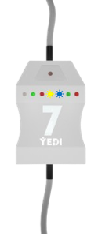
7 datçigi bir funksiýadan başga funksiýa geçirmek üçin ýagty ýer gerek. Eger-de agşam funksiýa çalyşmaly bolan ýagdaýynda 7 datçigiň ýokarky bölegine çyra tutup funksiýasyny üýtgedip bilersiňiz. 7 datçigiň 3, 4, 10, 11-nji görnüşlerini ulanmak üçin datçigi belendiräk gün şöhlesinden başga ýagtylyk düşmez ýaly ýerlerde goýmaly. Başga ýagtylygyň düşýän ýerinde goýulan ýagdaýynda rekursiýa emele gelýär. (Ýanyp- öçüp durýar). 7 datçige eliň aýasyny degirip aýyranyňda 1-nji ak çyra ýanýar. Her gezek 1-nji ak çyra ýananda 1 gezekden sanamaly. Eliň aýasyny degirip aýyranyňda interwal 1 sekuntdan kän bolsa 7 datçik yzygiderligi 0 diýip kabul edýär.